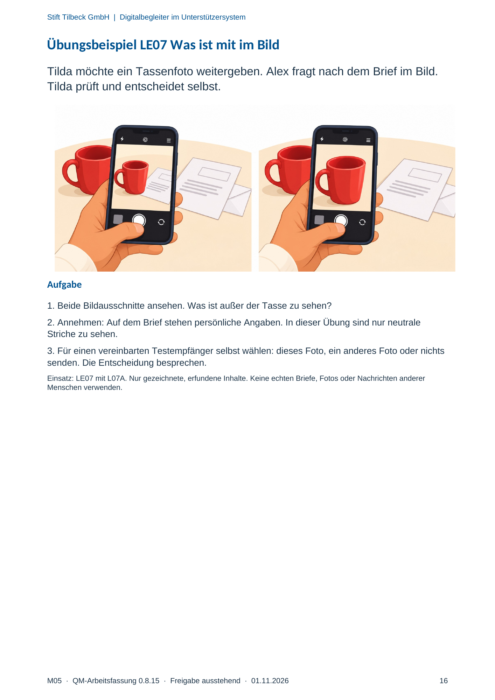

M05 · Originalseite 16
Übungsbeispiel LE07 Was ist mit im Bild
Gezielte Original-Druckauswahl.
Fragen und Ankreuzfelder werden auf dem Ausdruck bearbeitet. Die Lesefassung speichert keine Antworten.
Lesefassung · Seite 16
Stift Tilbeck GmbH | Digitalbegleiter im Unterstützersystem
M05 · QM-Arbeitsfassung 0.8.15 · Freigabe ausstehend · 01.11.2026 16
Übungsbeispiel LE07 Was ist mit im Bild
Tilda möchte ein Tassenfoto weitergeben. Alex fragt nach dem Brief im Bild.
Tilda prüft und entscheidet selbst.
Aufgabe
1. Beide Bildausschnitte ansehen. Was ist außer der Tasse zu sehen?
2. Annehmen: Auf dem Brief stehen persönliche Angaben. In dieser Übung sind nur neutrale
Striche zu sehen.
3. Für einen vereinbarten Testempfänger selbst wählen: dieses Foto, ein anderes Foto oder nichts
senden. Die Entscheidung besprechen.
Einsatz: LE07 mit L07A. Nur gezeichnete, erfundene Inhalte. Keine echten Briefe, Fotos oder Nachrichten anderer
Menschen verwenden.
Originalseite ansehen
